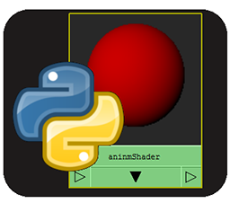

performanceWidget
This is a small library I wrote in order to create some "performance" widgets. What I mean by that is a series of widgets that can show computer performance, like ram usage , cpu usage etc. I tried to build the library in a way which is a bit flexible and modular and adapt to different type of data. Beware though this is not a library for data plotting, there are a lot of professional libraries out there to do that.
animShader
This lib was born because I needed a quick way to managing, saving ,loading and assign shaders to an animation rig without going crazy with it.
masterReload
This is a tool I wrote out of frustration for the repetitive actions needed in order to develop in Maya. For example when you develop a C++ plug-in, you need to kill and re-open Maya when you recompile a new version, load the plugin/plugins and setup the scene over and over.
storableClass

This is a library used to be able to save and load a collection of classes in the same way the were saved.